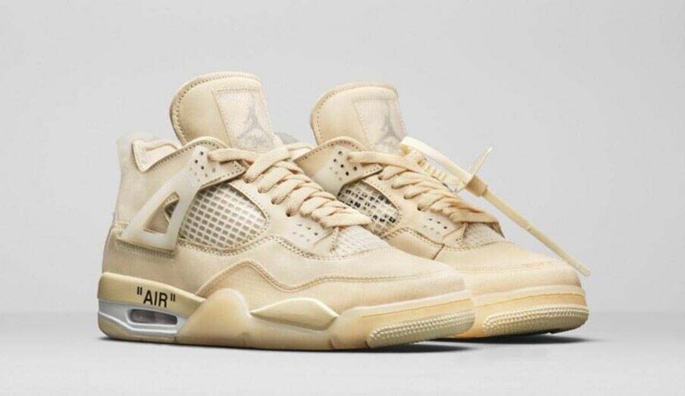
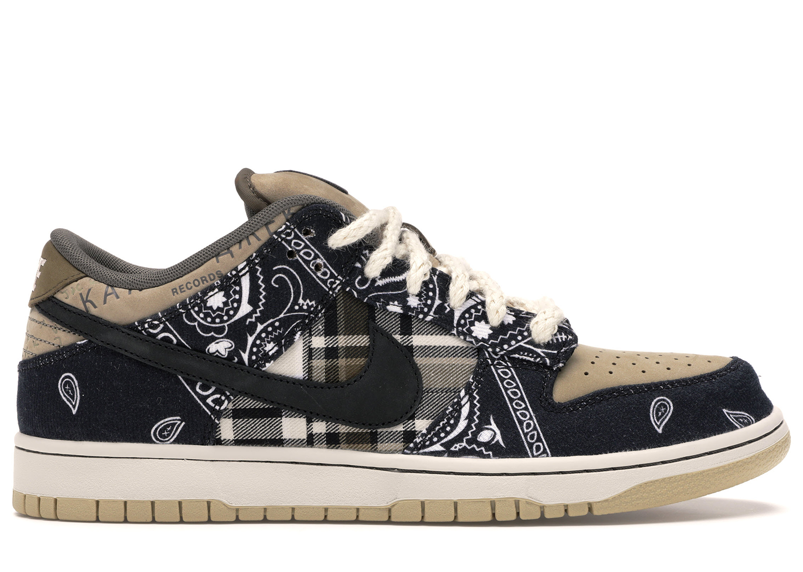

What shoes are hot right now?
What is hot right now?
Many brands are popular right now, but the emergence of Nike dunks and the
Jordan 1 are by far the most popular. Nike dunks were made originally for skateboarding,
and many find them not only stylish, but comfortable to wear for prolonged periods of time.
Jordan 1’s are also very popular once again, due to their influence on the culture, and timeless design.
Entering raffles on the Nike SNKRS app or Adidas confirmed app is the only chance that someone has to getting
these rare shoes for retail price.

Other infuences
Some other popular collaborations right now are Virgil Abloh and his line of OFF—WHITE Nike line, which includes models of the Jordan 1, 4, 5 and Dunks.
Travis Scott the rapper has had his collaborations with Nike too, leading to shoes reselling for up to $20,000 for friends and family pairs. Kanye has
continually made waves in his designs,
for Nike, Louis Vuitton, Bape and Adidas. Kanye’s Adidas Yeezy line continually sells out and pairs resell for hundreds of dollars over their retail price.
